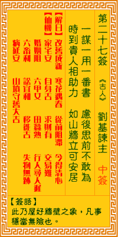

观音灵签第二十七签 【刘基谏主】 |
 | |||
一谋一用一番机，虑后疑前不敢为 时至自然逢贵人，银墙铁壁好安居 |
||||
| 【吉凶】 | 中中签 | 【宫位】 | 午宫 | |
| 【签语】 | 此卦屋好墙壁之象，凡事稳当无险也。 | |||
| 【解曰】 | 改旧从新 寒花遇春 从前阻滞 今得清心 | |||
| 【仙机】 | 此签家宅安，自身吉，求财有，交易难，婚姻阻，六甲女，行人寻人迟，田蚕熟，六畜利，讼宜和，移徙吉，失物无踪，病延安，山坟守 旧大吉。 | |||
| 【详解】 | 计划谋虑用尽了机谋，思前顾后仍然不敢有所作为;顺其自然，时候到了自然会有贵人相助，就像有铜墙铁壁般的稳固可以放心安住。 古花成事，寒花遇春，疑前阻滞，今得称心。此签墙有基址之象，凡事接引贵人乡。 本签者。墙有基址之家。凡事接引贵人乡者。君之今也。一谋一事一番机之时。举棋不定之刻。惟君正逢贵人助也。有银墙铁壁所安靠之人。虽有贵人之签。必须慎交。方有向善之效。否则受伊人愚弄。反得败名。 此签有”戒慎恐惧”之意。提醒当事人，凡事自食其力。有时人会想依附有权有势的对象，并希望”靠山”越稳越好，认为如此便可高枕无忧。但任何事绝无侥幸。故事中，李邺侯之所以坚辞所有的官职与厚禄，即是因为他心中雪亮，知道”伴君如伴虎”、树大易招风、更不愿被名与利束縳。因此不要妄想一步登天，须知”靠山山倒、靠人人倒”的道理。凡事脚踏实地，靠自己的实力来打拚。在与人合作方面，也应知见好就收，切莫贪图过多的利益，免得沉溺其中、无法收拾。 | |||
| 【典故】 | 刘基字伯温，是明朝朱元璋皇帝的军师。朱元璋在应天，韩林儿在安丰自称小明王，被张士诚兵士围攻，形势危急。元璋说要亲自去解围 ，刘基劝阻，认为会面对陈友谅攻击的危险，不可出兵。元璋军队到了安丰，才知道韩林儿已被打败，在逃亡中。这次出兵，如刘基所料，元璋军队被围攻，幸亏大将军徐达和常遇春勇力杀退敌人，才得脱险。 | |||